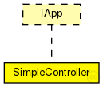

This documentation is released under the Creative Commons license
This documentation is released under the Creative Commons license~SimpleController is heritaged from IApp Module works like SDN controller which supports OFPv100 protocol. You can edit, add your own applications Applications already done: App1,App2,App3,App4 (Descryption of apps are in api.cc)
The following diagram shows usage relationships between types. Unresolved types are missing from the diagram. Click here to see the full picture.
The following diagram shows inheritance relationships for this type. Unresolved types are missing from the diagram. Click here to see the full picture.
| Name | Type | Default value | Description |
|---|---|---|---|
| localAddress | string | "" |
Controller socket parameters |
| localPort | int | 6633 |
localPort number to listen on |
| echoInterval | double | 5ms |
Some openflow and controllerStateFlow params |
| echoCancelInterval | double | 200ms |
waiting for EchoReqMsg interval |
| helloWaitInterval | double | 500ms |
waiting for Hello in HelloWaitingState |
| featuresWaitInterval | double | 500ms |
waiting for Features in FeatureWaitState |
| time_idle | int | 5 |
Idle time for ofp matches |
| time_hard | int | 0 |
Hard time for ofp matches |
| log2file | bool | false |
Logging errors to file File is placed in simulations/logs .log ext. You can run Wireshark to capture some packets and monitor the flows |
| runWireshark | bool | false |
running Wireshark |
| anyWiresharkCaptureInterface | bool | true |
set wireshark capturing interface filter to "any" |
| wiresharkCaptureInterface | string | "local" |
which interface is going to be listened (local=**.ext[0].*.device) |
| runMininet | bool | true |
You can run Mininet from Omnet |
| mntopo | string | "" |
you can specify your own topology in *.py files in simulations/mnnets and there you can just write name of file without py extention |
| application | string | "" |
name of application |
| flows | xml | xmldoc("") |
For app1,2,4 xml is used |
| dbIpAddr | string | "localhost" |
There is an App3 where Database is used you can specify parameters to connect. |
| dbPort | string | "6603" |
DB port |
| dbName | string | "" |
name of DB |
| dbUser | string | "" |
Name of DB user |
| dbPassword | string | "" |
DB password (optional) |
| dbErrorName | string | "" |
TO be done: logging errors not to file but to DB table! WoW |
| Name | Direction | Size | Description |
|---|---|---|---|
| socketIn | input | ||
| socketOut | output |
This documentation is released under the Creative Commons license